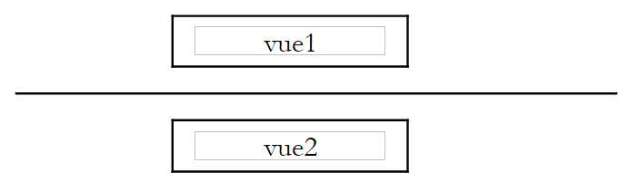
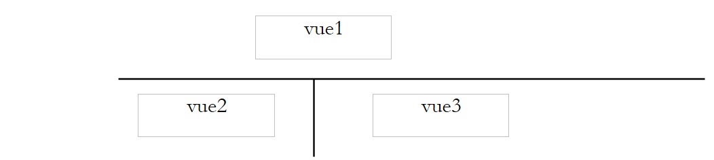
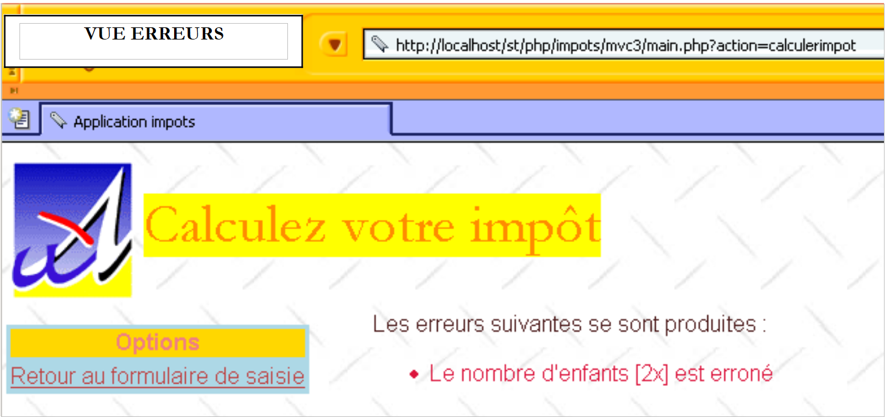
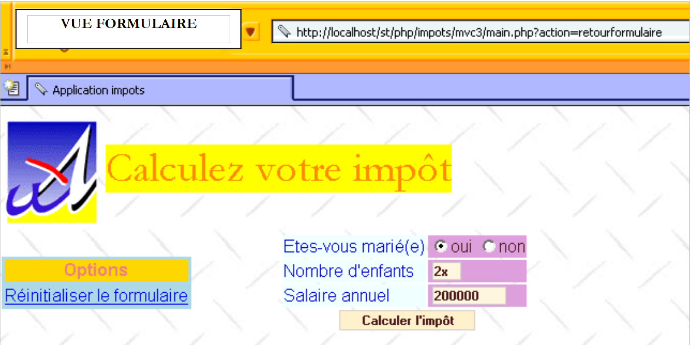

4. Une application d'illustration
Nous nous proposons d'illustrer la méthode précédente avec un exemple de calcul d'impôts.
4.1. Le problème
On se propose d'écrire un programme permettant de calculer l'impôt d'un contribuable. On se place dans le cas simplifié d'un contribuable n'ayant que son seul salaire à déclarer :
- on calcule le nombre de parts du salarié nbParts=nbEnfants/2 +1 s'il n'est pas marié, nbEnfants/2+2 s'il est marié, où nbEnfants est son nombre d'enfants. Le nombre de parts est augmenté de 0.5 s'il y a trois enfants ou plus.
- on calcule son revenu imposable R=0.72*S où S est son salaire annuel
- on calcule son coefficient familial Q=R/N
- on calcule son impôt I d'après les données suivantes
| Chaque ligne a 3 champs limite, coeffR, coeffN. Pour calculer l'impôt I, on recherche la première ligne où QF<=limite. Par exemple, si QF=30000 on trouvera la ligne : 31810 0.2 3309.5. L'impôt I est alors égal à 0.2*R - 3309.5*nbParts. Si QF est tel que la relation QF<=limite n'est jamais vérifiée, alors ce sont les coefficients de la dernière ligne qui sont utilisés : 0 0.65 49062 ce qui donne l'impôt I=0.65*R - 49062*nbParts. |
4.2. La base de données
Les données précédentes sont enregistrées dans une base MySQL appelée dbimpots. L'utilisateur seldbimpots de mot de passe mdpseldbimpots a un accès en lecture seule au contenu de la base. Celle-ci a une unique table appelée impots dont la structure est la suivante :

Son contenu est le suivant :

4.3. L'architecture MVC de l'application
L'application aura l'architecture MVC suivante :
 |
- le contrôleur main.php sera le contrôleur générique exposé précédemment
- la demande du client est envoyée au contrôleur sous la forme d'une requête de la forme main.php?action=xx. La valeur du paramètre action détermine le script du bloc ACTIONS à exécuter. Le script d'action exécuté rend au contrôleur une variable indiquant l'état dans lequel doit être placée l'application web. Muni de cet état, le contrôleur va activer l'un des générateurs de vues pour envoyer la réponse au client.
- impots-data.php est la classe chargée de fournir au contrôleur les données dont il a besoin
- impots-calcul.php est la classe métier permettant le calcul de l'impôt
4.4. La classe d'accès aux données
La classe d'accès aux données est construite pour cacher à l'application web la provenance des données. Dans son interface, on trouve une méthode getData qui délivre les trois tableaux de données nécessaires au calcul de l'impôt. Dans notre exemple, les données sont prises dans une base de données MySQL. Afin de rendre la classe indépendante du type réel du SGBD, nous utiliserons la bibliothèque pear::DB décrite en annexe. Le code de la classe est le suivant :
<?php
// bibliothèques
require_once 'DB.php';
class impots_data{
// classe d'accès à la source de données DBIMPOTS
// attributs
var $sDSN; // la chaîne de connexion
var $sDatabase; // le nom de la base
var $oDB; // connexion à la base
var $aErreurs; // liste d'erreurs
var $oRésultats; // résultat d'une requête
var $connecté; // booléen qui indique si on est connecté ou non à la base
var $sQuery; // la dernière requête exécutée
// constructeur
function impots_data($dDSN){
// $dDSN : dictionnaire définissant la liaison à établir
// $dDSN['sgbd'] : le type du SGBD auquel il faut se connecter
// $dDSN['host'] : le nom de la machine hôte qui l'héberge
// $dDSN['database'] : le nom de la base à laquelle il faut se connecter
// $dDSN['user'] : un utilisateur de la bse
// $dDSN['mdp'] : son mot de passe
// crée dans $oDB une connexion à la base définie par $dDSN sous l'identité de $dDSN['user']
// si la connexion réussit
// met dans $sDSN la chaîne de connexion à la base
// met dans $sDataBase le nom de la base à laquelle on se connecte
// met $connecté à vrai
// si la connexion échoue
// met les msg d'erreurs adéquats dans la liste $aErreurs
// ferme la connexion si besoin est
// met $connecté à faux
// raz liste des erreurs
$this->aErreurs=array();
// on crée une connexion à la base $sDSN
$this->sDSN=$dDSN["sgbd"]."://".$dDSN["user"].":".$dDSN["mdp"]."@".$dDSN["host"]."/".$dDSN["database"];
$this->sDatabase=$dDSN["database"];
$this->connect();
// connecté ?
if( ! $this->connecté) return;
// la connexion a réussi
$this->connecté=TRUE;
}//constructeur
// ------------------------------------------------------------------
function connect(){
// (re)connexion à la base
// raz liste des erreurs
$this->aErreurs=array();
// on crée une connexion à la base $sDSN
$this->oDB=DB::connect($this->sDSN,true);
// erreur ?
if(DB::iserror($this->oDB)){
// on note l'erreur
$this->aErreurs[]="Echec de la connexion à la base [".$this->sDatabase."] : [".$this->oDB->getMessage()."]";
// la connexion a échoué
$this->connecté=FALSE;
// fin
return;
}
// on est connecté
$this->connecté=TRUE;
}//connect
// ------------------------------------------------------------------
function disconnect(){
// si on est connecté, on ferme la connexion à la base $sDSN
if($this->connecté){
$this->oDB->disconnect();
// on est déconnecté
$this->connecté=FALSE;
}//if
}//disconnect
// -------------------------------------------------------------------
function execute($sQuery){
// $sQuery : requête à exécuter
// on mémorise la requête
$this->sQuery=$sQuery;
// est-on connecté ?
if(! $this->connecté){
// on note l'erreur
$this->aErreurs[]="Pas de connexion existante à la base [$this->sDatabase]";
// fin
return;
}//if
// exécution de la requête
$this->oRésultats=$this->oDB->query($sQuery);
// erreur ?
if(DB::iserror($this->oRésultats)){
// on note l'erreur
$this->aErreurs[]="Echec de la requête [$sQuery] : [".$this->oRésultats->getMessage()."]";
// retour
return;
}//if
}//execute
// ------------------------------------------------------------------
function getData(){
// on récupère les 3 séries de données limites, coeffr, coeffn
$this->execute('select limites, coeffR, coeffN from impots');
// des erreurs ?
if(count($this->aErreurs)!=0) return array();
// on parcourt le résultat du select
while ($ligne = $this->oRésultats->fetchRow(DB_FETCHMODE_ASSOC)) {
$limites[]=$ligne['limites'];
$coeffr[]=$ligne['coeffR'];
$coeffn[]=$ligne['coeffN'];
}//while
return array($limites,$coeffr,$coeffn);
}//getDataImpots
}//classe
?>
Un programme de test pourrait être le suivant :
<?php
// bibliothèque
require_once "c-impots-data.php";
require_once "DB.php";
// test de la classe impots-data
ini_set('track_errors','on');
ini_set('display_errors','on');
// configuration base dbimpots
$dDSN=array(
"sgbd"=>"mysql",
"user"=>"seldbimpots",
"mdp"=>"mdpseldbimpots",
"host"=>"localhost",
"database"=>"dbimpots"
);
// ouverture de la session
$oImpots=new impots_data($dDSN);
// erreurs ?
if(checkErreurs($oImpots)){
exit(0);
}
// suivi
echo "Connecté à la base...\n";
// récupération des données limites, coeffr, coeffn
list($limites,$coeffr,$coeffn)=$oImpots->getData();
// erreurs ?
if( ! checkErreurs($oImpots)){
// contenu
echo "données : \n";
for($i=0;$i<count($limites);$i++){
echo "[$limites[$i],$coeffr[$i],$coeffn[$i]]\n";
}//for
}//if
// on se déconnecte
$oImpots->disconnect();
// suivi
echo "Déconnecté de la base...\n";
// fin
exit(0);
// ----------------------------------
function checkErreurs(&$oImpots){
// des erreurs ?
if(count($oImpots->aErreurs)!=0){
// affichage
for($i=0;$i<count($oImpots->aErreurs);$i++){
echo $oImpots->aErreurs[$i]."\n";
}//for
// des erreurs
return true;
}//if
// pas d'erreurs
return false;
}//checkErreurs
?>
L'exécution de ce programme de test donne les résultats suivants :
Connecté à la base...
données :
[12620,0,0]
[13190,0.05,631]
[15640,0.1,1290.5]
[24740,0.15,2072.5]
[31810,0.2,3309.5]
[39970,0.25,4900]
[48360,0.3,6898]
[55790,0.35,9316.5]
[92970,0.4,12106]
[127860,0.45,16754]
[151250,0.5,23147.5]
[172040,0.55,30710]
[195000,0.6,39312]
[0,0.65,49062]
Déconnecté de la base...
4.5. La classe de calcul de l'impôt
Cette classe permet de calculer l'impôt d'un contribuable. On fournit à son constructeur les données permettant ce calcul. Il se charge ensuite de calculer l'impôt correspondant. Le code de la classe est le suivant :
<?php
class impots_calcul{
// classe de calcul de l'impôt
// constructeur
function impots_calcul(&$perso,&$data){
// $perso : dictionnaire avec les clés suivantes
// enfants(e) : nbre d'enfants
// salaire(e) : salaire annuel
// marié(e) : booléen indiquant si le contribuable est marié ou non
// impot(s) : impôt à payer calculé par ce constructeur
// $data : dictionnaire avec les clés suivantes
// limites : tableau des limites de tranches
// coeffr : tableau des coefficients du revenu
// coeffn tablaeu des coefficients du nombre de parts
// les 3 tableaux ont le même nbre d'éléments
// calcul du nombre de parts
if($perso['marié'])
$nbParts=$perso['enfants']/2+2;
else $nbParts=$perso['enfants']/2+1;
if ($perso['enfants']>=3) $nbParts+=0.5;
// revenu imposable
$revenu=0.72*$perso['salaire'];
// quotient familial
$QF=$revenu/$nbParts;
// recherche de la tranche d'impots correspondant à QF
$nbTranches=count($data['limites']);
$i=0;
while($i<$nbTranches-2 && $QF>$data['limites'][$i]) $i++;
// l'impôt
$perso['impot']=floor($data['coeffr'][$i]*$revenu-$data['coeffn'][$i]*$nbParts);
}//constructeur
}//classe
?>
Un programme de test pourrait être le suivant :
<?php
// bibliothèque
require_once "c-impots-data.php";
require_once "c-impots-calcul.php";
// configuration base dbimpots
$dDSN=array(
"sgbd"=>"mysql",
"user"=>"seldbimpots",
"mdp"=>"mdpseldbimpots",
"host"=>"localhost",
"database"=>"dbimpots"
);
// ouverture de la session
$oImpots=new impots_data($dDSN);
// erreurs ?
if(checkErreurs($oImpots)){
exit(0);
}
// suivi
echo "Connecté à la base...\n";
// récupération des données limites, coeffr, coeffn
list($limites,$coeffr,$coeffn)=$oImpots->getData();
// erreurs ?
if(checkErreurs($oImpots)){
exit(0);
}
// on se déconnecte
$oImpots->disconnect();
// suivi
echo "Déconnecté de la base...\n";
// calcul d'un impôt
$dData=array('limites'=>&$limites,'coeffr'=>&$coeffr,'coeffn'=>&$coeffn);
$dPerso=array('enfants'=>2,'salaire'=>200000,'marié'=>true,'impot'=>0);
new impots_calcul($dPerso,$dData);
dump($dPerso);
$dPerso=array('enfants'=>3,'salaire'=>200000,'marié'=>false,'impot'=>0);
new impots_calcul($dPerso,$dData);
dump($dPerso);
$dPerso=array('enfants'=>3,'salaire'=>20000,'marié'=>true,'impot'=>0);
new impots_calcul($dPerso,$dData);
dump($dPerso);
$dPerso=array('enfants'=>3,'salaire'=>2000000,'marié'=>true,'impot'=>0);
new impots_calcul($dPerso,$dData);
dump($dPerso);
// fin
exit(0);
// ----------------------------------
function checkErreurs(&$oImpots){
// des erreurs ?
if(count($oImpots->aErreurs)!=0){
// affichage
for($i=0;$i<count($oImpots->aErreurs);$i++){
echo $oImpots->aErreurs[$i]."\n";
}//for
// des erreurs
return true;
}//if
// pas d'erreurs
return false;
}//checkErreurs
?>
L'exécution de ce programme de tests donne les résultats suivants :
Connecté à la base...
Déconnecté de la base...
[enfants,2] [salaire,200000] [marié,1] [impot,22506]
[enfants,3] [salaire,200000] [marié,] [impot,22506]
[enfants,3] [salaire,20000] [marié,1] [impot,0]
[enfants,3] [salaire,2000000] [marié,1] [impot,706752]
4.6. Le fonctionnement de l'application
Lorsque l'application web de calcul de l'impôt est lancée, on obtient la vue [v-formulaire] suivante :
 |
L'utilisateur remplit les champs et demande le calcul de l'impôt :
 |
On remarquera que le formulaire est régénéré dans l'état où l'utilisateur l'a validé et qu'il affiche de plus le montant de l'impôt à payer. L'utilisateur peut faire des erreurs de saisie. Celles-ci lui sont signalées par une page d'erreurs qu'on appelera la vue [v-erreurs].
 |
 |
Le lien [Retour au formulaire de saisie] permet à l'utilisateur de retrouver le formulaire tel qu'il l'a validé.
 |
Enfin le bouton [Effacer le formulaire] remet le formulaire dans son état initial, c.a.d. tel que l'utilisateur l'a reçu lors de la demande initiale.
4.7. Retour sur l'architecture MVC de l'application
L'application a l'architecture MVC suivante :
 |
Nous venons de décrire les deux classes impots-data.php et impots-calcul.php. Nous décrivons maintenant les autres éléments de l'architecture.
4.8. Le contrôleur de l'application
Le contrôleur main.php de l'application est celui qui a été décrit dans la première partie de ce chapitre. C'est un contrôleur générique indépendant de l'application.
<?php
// contrôleur générique
// lecture config
include 'config.php';
// inclusion de bibliothèques
for($i=0;$i<count($dConfig['includes']);$i++){
include($dConfig['includes'][$i]);
}//for
// on démarre ou reprend la session
session_start();
$dSession=$_SESSION["session"];
if($dSession) $dSession=unserialize($dSession);
// on récupère l'action à entreprendre
$sAction=$_GET['action'] ? strtolower($_GET['action']) : 'init';
$sAction=strtolower($_SERVER['REQUEST_METHOD']).":$sAction";
// l'enchaînement des actions est-il normal ?
if( ! enchainementOK($dConfig,$dSession,$sAction)){
// enchaînement anormal
$sAction='enchainementinvalide';
}//if
// traitement de l'action
$scriptAction=$dConfig['actions'][$sAction] ?
$dConfig['actions'][$sAction]['url'] :
$dConfig['actions']['actionInvalide']['url'];
include $scriptAction;
// envoi de la réponse(vue) au client
$sEtat=$dSession['etat']['principal'];
$scriptVue=$dConfig['etats'][$sEtat]['vue'];
include $scriptVue;
// fin du script - on ne devrait pas arriver là sauf bogue
trace ("Erreur de configuration.");
trace("Action=[$sAction]");
trace("scriptAction=[$scriptAction]");
trace("Etat=[$sEtat]");
trace("scriptVue=[$scriptVue]");
trace ("Vérifiez que les script existent et que le script [$scriptVue] se termine par l'appel à finSession.");
exit(0);
// ---------------------------------------------------------------
function finSession(&$dConfig,&$dReponse,&$dSession){
// $dConfig : dictionnaire de configuration
// $dSession : dictionnaire contenant les infos de session
// $dReponse : le dictionnaire des arguments de la page de réponse
// enregistrement de la session
if(isset($dSession)){
// on met les paramètres de la requête dans la session
$dSession['requete']=strtolower($_SERVER['REQUEST_METHOD'])=='get' ? $_GET :
strtolower($_SERVER['REQUEST_METHOD'])=='post' ? $_POST : array();
$_SESSION['session']=serialize($dSession);
session_write_close();
}else{
// pas de session
session_destroy();
}
// on présente la réponse
include $dConfig['vuesReponse'][$dReponse['vuereponse']]['url'];
// fin du script
exit(0);
}//finsession
//--------------------------------------------------------------------
function enchainementOK(&$dConfig,&$dSession,$sAction){
// vérifie si l'action courante est autorisée vis à vis de l'état précédent
$etat=$dSession['etat']['principal'];
if(! isset($etat)) $etat='sansetat';
// vérification action
$actionsautorisees=$dConfig['etats'][$etat]['actionsautorisees'];
$autorise= ! isset($actionsautorisees) || in_array($sAction,$actionsautorisees);
return $autorise;
}
//--------------------------------------------------------------------
function dump($dInfos){
// affiche un dictionnaire d'informations
while(list($clé,$valeur)=each($dInfos)){
echo "[$clé,$valeur]<br>\n";
}//while
}//suivi
//--------------------------------------------------------------------
function trace($msg){
echo $msg."<br>\n";
}//suivi
?>
4.9. Les actions de l'application web
Il y a quatre actions :
- get:init : c'est l'action qui est déclenchée lors de la demande initiale sans paramètres au contrôleur. Elle génére la vue 'formulaire' vide.
- post:effacerformulaire : action déclenchée par le bouton [Effacer le formulaire]. Elle génére la vue [v-formulaire] vide.
- post:calculerimpot : action déclenchée par le bouton [Calculer l'impôt]. Elle génère soit la vue [v-formulaire] avec le montant de l'impôt à payer, soit la vue [v-erreurs].
- get:retourformulaire : action déclenchée par le lien [Retour au formulaire de saisie]. Elle génère la vue [v-formulaire] pré-remplie avec les données erronées.
Ces actions sont configurées de la façon suivante dans le fichier de configuration :
<?php
…
// configuration des actions de l'application
$dConfig['actions']['get:init']=array('url'=>'a-init.php');
$dConfig['actions']['post:calculerimpot']=array('url'=>'a-calculimpot.php');
$dConfig['actions']['get:retourformulaire']=array('url'=>'a-retourformulaire.php');
$dConfig['actions']['post:effacerformulaire']=array('url'=>'a-init.php');
$dConfig['actions']['enchainementinvalide']=array('url'=>'a-enchainementinvalide.php');
$dConfig['actions']['actionInvalide']=array('url'=>'a-actioninvalide.php');
A chaque action, est associé le script chargé de la traiter. Chaque action va emmener l'application web dans un état fixé par l'élément $dSession['etat']['principal']. Cet état est destiné à être sauvegardé dans la session. Par ailleurs, l'action enregistre dans le dictionnaire $dReponse, les informations utiles pour l'affichage de la vue liée au nouvel état dans lequel va se trouver l'application.
4.10. Les états de l'application web
Il y en a deux :
- [e-formulaire] : état où sont présentées les différentes variantes de la vue [v-formulaire].
- [e-erreurs] : état où est présentée la vue [v-erreurs].
Les actions autorisées dans ces états sont les suivantes :
<?php
…
// configuration des états de l'application
$dConfig['etats']['formulaire']=array(
'actionsautorisees'=>array('post:calculerimpot','get:init','post:effacerformulaire'),
'vue'=>'e-formulaire.php');
$dConfig['etats']['erreurs']=array(
'actionsautorisees'=>array('get:retourformulaire','get:init'),
'vue'=>'e-erreurs.php');
$dConfig['etats']['sansetat']=array('actionsautorisees'=>array('get:init'));
Dans un état, les actions autorisées correspondent aux URL cibles des liens ou boutons [submit] de la vue associée à l'état. De plus, l'action 'get:init' est tout le temps autorisée. Cela permet à l'utilisateur de récupérer l'URL main.php dans la liste des URL de son navigateur et de la rejouer quelque soit l'état de l'application. C'est une sorte de réinitialisation 'à la main'. L'état 'sansetat' n'existe qu'au démarrage de l'application.
A chaque état de l'application est associé un script chargé de générer la vue associée à l'état :
- état [e-formulaire] : script e-formulaire.php
- état [e-erreurs] : script e-erreurs.php
L'état [e-formulaire] va présenter la vue [v-formulaire] avec des variantes. En effet, la vue [v-formulaire] peut être présentée vide ou pré-remplie ou avec le montant de l'impôt. L'action qui amènera l'application dans l'état [e-formulaire] précise dans la variable $dSession['etat']['principal'] l'état principal de l'application. Le contrôleur n'utilise que cette information. Dans notre application, l'action qui amène à l'état [e-formulaire] ajoutera dans $dSession['etat']['secondaire'] une information complémentaire permettant au générateur de la réponse de savoir s'il doit générer un formulaire vide, pré-rempli, avec ou sans le montant de l'impôt. On aurait pu procéder différemment en estimant qu'il y avait là trois états différents et donc trois générateurs de vue à écrire.
4.11. Le fichier config.php de configuration de l'application web
<?php
// configuration de php
ini_set("register_globals","off");
ini_set("display_errors","off");
ini_set("expose_php","off");
// liste des modules à inclure
$dConfig['includes']=array('c-impots-data.php','c-impots-calcul.php');
// contrôleur de l'application
$dConfig['webapp']=array('titre'=>"Calculez votre impôt");
// configuration des vues de l'aplication
$dConfig['vuesReponse']['modele1']=array('url'=>'m-reponse.php');
$dConfig['vuesReponse']['modele2']=array('url'=>'m-reponse2.php');
$dConfig['vues']['formulaire']=array('url'=>'v-formulaire.php');
$dConfig['vues']['erreurs']=array('url'=>'v-erreurs.php');
$dConfig['vues']['formulaire2']=array('url'=>'v-formulaire2.php');
$dConfig['vues']['erreurs2']=array('url'=>'v-erreurs2.php');
$dConfig['vues']['bandeau']=array('url'=>'v-bandeau.php');
$dConfig['vues']['menu']=array('url'=>'v-menu.php');
$dConfig['style']['url']='style1.css';
// configuration des actions de l'application
$dConfig['actions']['get:init']=array('url'=>'a-init.php');
$dConfig['actions']['post:calculerimpot']=array('url'=>'a-calculimpot.php');
$dConfig['actions']['get:retourformulaire']=array('url'=>'a-retourformulaire.php');
$dConfig['actions']['post:effacerformulaire']=array('url'=>'a-init.php');
$dConfig['actions']['enchainementinvalide']=array('url'=>'a-enchainementinvalide.php');
$dConfig['actions']['actionInvalide']=array('url'=>'a-actioninvalide.php');
// configuration des états de l'application
$dConfig['etats']['e-formulaire']=array(
'actionsautorisees'=>array('post:calculerimpot','get:init','post:effacerformulaire'),
'vue'=>'e-formulaire.php');
$dConfig['etats']['e-erreurs']=array(
'actionsautorisees'=>array('get:retourformulaire','get:init'),
'vue'=>'e-erreurs.php');
$dConfig['etats']['sansetat']=array('actionsautorisees'=>array('get:init'));
// configuration modèle de l'application
$dConfig["DSN"]=array(
"sgbd"=>"mysql",
"user"=>"seldbimpots",
"mdp"=>"mdpseldbimpots",
"host"=>"localhost",
"database"=>"dbimpots"
);
?>
4.12. Les actions de l'application web
4.12.1. Fonctionnement général des scripts d'action
- Un script d'action est appelé par le contrôleur selon le paramètre action que celui-ci a reçu du client.
- Après exécution, le script d'action doit indiquer au contrôleur l'état dans lequel placer l'application. Cet état doit être indiqué dans $dSession['etat']['principal'].
- Un script d'action peut vouloir placer des informations dans la session. Il le fait en plaçant celles-ci dans le dictionnaire $dSession, ce dictionnaire étant automatiquement sauvegardé dans la session par le contrôleur à la fin du cycle demande-réponse.
- Un script d'action peut avoir des informations à passer aux vues. Cet aspect est indépendant du contrôleur. Il s'agit de l'interface entre les actions et les vues, interface propre à chaque application. Dans l'exemple étudié ici, les actions fourniront des informations aux générateurs de vues via un dictionnaire appelé $dReponse.
4.12.2. L'action get:init
C'est l'action qui génère le formulaire vide. Le fichier de configuration montre qu'elle sera traitée par le script a-init.php :
Le code du script a-init.php est le suivant :
<?php
// on affiche le formulaire de saisie
$dSession['etat']=array('principal'=>'e-formulaire', 'secondaire'=>'init');
?>
Ce script se contente de fixer dans $dSession['etat']['principal'] l'état dans lequel doit se trouver l'application, l'état [e-formulaire] et amène dans $dSession['etat']['secondaire'] une précision sur cet état. Le fichier de configuration nous montre que le contrôleur exécutera le script e-formulaire.php pour générer la réponse au client.
<?php
…
$dConfig['etats']['e-formulaire']=array(
'actionsautorisees'=>array('post:calculerimpot','get:init','post:effacerformulaire'),
'vue'=>'e-formulaire.php');
Le script e-formulaire.php génèrera la vue [v-formulaire] dans sa variante [init], c.a.d. le formulaire vide.
4.12.3. L'action post:calculerimpot
C'est l'action qui permet de calculer l'impôt à partir des données saisies dans le formulaire. Le fichier de configuration indique que c'est le script a-calculimpot.php qui va traiter cette action :
Le code du script a-calculimpot.php est le suivant :
<?php
// requête de demande de calcul d'impôt
// on vérifie d'abord la validité des paramètres
$sOptMarie=$_POST['optmarie'];
if($sOptMarie!='oui' && $sOptMarie!='non'){
$erreurs[]="L'état marital [$sOptMarie] est erroné";
}
$sEnfants=trim($_POST['txtenfants']);
if(! preg_match('/^\d{1,3}$/',$sEnfants)){
$erreurs[]="Le nombre d'enfants [$sEnfants] est erroné";
}
$sSalaire=trim($_POST['txtsalaire']);
if(! preg_match('/^\d+$/',$sSalaire)){
$erreurs[]="Le salaire annuel [$sSalaire] est erroné";
}
// s'il y a des erreurs, c'est fini
if(count($erreurs)!=0){
// préparation de la page d'erreurs
$dReponse['erreurs']=&$erreurs;
$dSession['etat']=array('principal'=>'e-erreurs','secondaire'=>'saisie');
return;
}//if
// les données saisies sont correctes
// on récupère les données nécessaires au calcul de l'impôt
if(! $dSession['limites']){
// les données ne sont pas dans la session
// on les récupère dans la source de données
list($erreurs,$limites,$coeffr,$coeffn)=getData($dConfig['DSN']);
// s'il y a des erreurs, on affiche la page d'erreurs
if(count($erreurs)!=0){
// préparation de la page d'erreurs
$dReponse['erreurs']=&$erreurs;
$dSession['etat']=array('principal'=>'e-erreurs','secondaire'=>'database');
return;
}//if
// pas d'erreurs - les données sont mises dans la session
$dSession['limites']=&$limites;
$dSession['coeffr']=&$coeffr;
$dSession['coeffn']=&$coeffn;
}//if
// ici on a les données nécessaire au calcul de l'impôt
// on calcule celui-ci
$dData=array('limites'=>&$dSession['limites'],
'coeffr'=>&$dSession['coeffr'],
'coeffn'=>&$dSession['coeffn']);
$dPerso=array('enfants'=>$sEnfants,'salaire'=>$sSalaire,'marié'=>($sOptMarie=='oui'),'impot'=>0);
new impots_calcul($dPerso,$dData);
// préparation de la page réponse
$dSession['etat']=array('principal'=>'e-formulaire','secondaire'=>'calculimpot');
$dReponse['impot']=$dPerso['impot'];
return;
//-----------------------------------------------------------------------
function getData($dDSN){
// connexion à la source de données définie par le dictionnaire $dDSN
$oImpots=new impots_data($dDSN);
if(count($oImpots->aErreurs)!=0) return array($oImpots->aErreurs);
// récupération des données limites, coeffr, coeffn
list($limites,$coeffr,$coeffn)=$oImpots->getData();
// on se déconnecte
$oImpots->disconnect();
// on rend le résultat
if(count($oImpots->aErreurs)!=0) return array($oImpots->aErreurs);
else return array(array(),$limites,$coeffr,$coeffn);
}//getData
Le script fait ce qu'il a à faire : calculer l'impôt. Nous laissons au lecteur le soin de décrypter le code du traitement. Nous nous intéressons aux états qui peuvent survenir à la suite de cette action :
- les données saisies sont incorrectes ou l'accès aux données se passe mal : l'application est mise dans l'état [e-erreurs]. Le fichier de configuration montre que c'est le script e-erreurs.php qui sera chargé de générer la vue réponse :
<?php
…
$dConfig['etats']['e-erreurs']=array(
'actionsautorisees'=>array('get:retourformulaire','get:init'),
'vue'=>'e-erreurs.php');
- dans tous les autres cas, l'application est placée dans l'état [e-formulaire] avec la variante calculimpot indiquée dans $dSession['etat']['secondaire']. Le fichier de configuration montre que c'est le script e-formulaire.php qui va générer la vue réponse. Il utilisera la valeur de $dSession['etat']['secondaire'] pour générer un formulaire pré-rempli avec les valeurs saisies par l'utilisateur et de plus le montant de l'impôt.
4.12.4. L'action post:effacerformulaire
Elle est associée par configuration au script a-init.php déjà décrit.
4.12.5. L'action get:retourformulaire
Elle permet de revenir à l'état [e-formulaire] à partir de l'état [e-erreurs]. C'est le script a-retourformulaire.php qui traite cette action :
Le script a-retourformulaire.php est le suivant :
<?php
// on affiche le formulaire de saisie
$dSession['etat']=array('principal'=>'e-formulaire','secondaire'=>'retourformulaire');
?>
On demande simplement à ce que l'application soit placé dans l'état [e-formulaire] dans sa variante [retourformulaire]. Le fichier de configuration nous montre que le contrôleur exécutera le script e-formulaire.php pour générer la réponse au client.
<?php
…
$dConfig['etats']['e-formulaire']=array(
'actionsautorisees'=>array('post:calculerimpot','get:init','post:effacerformulaire'),
'vue'=>'e-formulaire.php');
Le script e-formulaire.php génèrera la vue [v-formulaire] dans sa variante [retourformulaire], c.a.d. le formulaire pré-rempli avec les valeurs saisies par l'utilisateur mais sans le montant de l'impôt.
4.13. L'enchaînement d'actions invalide
Les actions valides à partir d'un état donné de l'application sont fixées par configuration :
<?php
…
// configuration des états de l'application
$dConfig['etats']['e-formulaire']=array(
'actionsautorisees'=>array('post:calculerimpot','get:init','post:effacerformulaire'),
'vue'=>'e-formulaire.php');
$dConfig['etats']['e-erreurs']=array(
'actionsautorisees'=>array('get:retourformulaire','get:init'),
'vue'=>'e-erreurs.php');
$dConfig['etats']['sansetat']=array('actionsautorisees'=>array('get:init'));
Nous avons déjà expliqué cette configuration. Si un enchaînement invalide d'actions est détecté, le script a-enchainementinvalide.php s'exécute :
Le code de ce script est le suivant :
<?php
// enchaînement d'actions invalide
$dReponse['erreurs']=array("Enchaînement d'actions invalide");
$dSession['etat']=array('principal'=>'e-erreurs','secondaire'=>'enchainementinvalide');
?>
Il consiste à placer l'application dans l'état [e-erreurs]. Nous donnons dans $dSession['etat']['secondaire'] une information qui sera exploitée par le générateur de la page d'erreurs. Comme nous l'avons déjà vu, ce générateur est e-erreurs.php :
<?php
…
$dConfig['etats']['e-erreurs']=array(
'actionsautorisees'=>array('get:retourformulaire','get:init'),
'vue'=>'e-erreurs.php');
Nous verrons le code de ce générateur ultérieurement. La vue envoyée au client est la suivante :

4.14. Les vues de l'application
4.14.1. Affichage de la vue finale
Regardons comment le contrôleur envoie la réponse au client, une fois exécutée l'action demandée par celui-ci :
<?php
…
....
// on démarre ou reprend la session
session_start();
$dSession=$_SESSION["session"];
if($dSession) $dSession=unserialize($dSession);
// on récupère l'action à entreprendre
$sAction=$_GET['action'] ? strtolower($_GET['action']) : 'init';
$sAction=strtolower($_SERVER['REQUEST_METHOD']).":$sAction";
// l'enchaînement des actions est-il normal ?
if( ! enchainementOK($dConfig,$dSession,$sAction)){
// enchaînement anormal
$sAction='enchainementinvalide';
}//if
// traitement de l'action
$scriptAction=$dConfig['actions'][$sAction] ?
$dConfig['actions'][$sAction]['url'] :
$dConfig['actions']['actionInvalide']['url'];
include $scriptAction;
// envoi de la réponse(vue) au client
$sEtat=$dSession['etat']['principal'];
$scriptVue=$dConfig['etats'][$sEtat]['vue'];
include $scriptVue;
.....
// ---------------------------------------------------------------
function finSession(&$dConfig,&$dReponse,&$dSession){
// $dConfig : dictionnaire de configuration
// $dSession : dictionnaire contenant les infos de session
// $dReponse : le dictionnaire des arguments de la page de réponse
// enregistrement de la session
...
// envoi de la réponse au client
include $dConfig['vuesReponse'][$dReponse['vuereponse']]['url'];
// fin du script
exit(0);
}//finsession
Au retour d'un script d'action, le contrôleur récupère dans $dSession['etat']['principal'] l'état dans lequel il doit mettre l'application. Cet état a été fixé par l'action qui vient d'être exécutée. Le contrôleur fait alors exécuter le générateur de vue associée à l'état. Il trouve le nom de celui-ci dans le fichier de configuration. Le rôle du générateur de vue est le suivant :
- fixe dans $dReponse['vuereponse'] le nom du modèle de réponse à utiliser. Cette information sera passée au contrôleur. Un modèle est une composition de vues élémentaires qui rassemblées forment la vue finale.
- prépare les informations dynamiques à afficher dans la vue finale. Ce point est indépendant du contrôleur. Il s'agit de l'interface entre le générateur de vues et la vue finale. Elle est propre à chaque application.
- se termine obligatoirement par l'appel à la fonction finSession du contrôleur. Cette fonction va
- sauvegarder la session
- envoyer la réponse
Le code de la fonction finSession est le suivant :
<?php
…
// ---------------------------------------------------------------
function finSession(&$dConfig,&$dReponse,&$dSession){
// $dConfig : dictionnaire de configuration
// $dSession : dictionnaire contenant les infos de session
// $dReponse : le dictionnaire des arguments de la page de réponse
// enregistrement de la session
...
// envoi de la réponse au client
include $dConfig['vuesReponse'][$dReponse['vuereponse']]['url'];
// fin du script
exit(0);
}//finsession
La vue envoyée à l'utilisateur est définie par l'entité $dReponse['vuereponse'] qui définit le modèle à utiliser pour la réponse finale.
4.14.2. Modèle de la réponse
L'application génèrera ses différentes réponses selon le modèle unique suivant :
 |
Ce modèle est associé à la clé modéle1 du dictionnaire $dConfig['vuesreponse'] :
Le script m-reponse.php est chargé de générer ce modèle :
<html>
<head>
<title>Application impots</title>
<link type="text/css" href="<?php echo $dReponse['urlstyle'] ?>" rel="stylesheet" />
</head>
<body>
<?php
include $dReponse['vue1'];
?>
<hr>
<?php
include $dReponse['vue2'];
?>
</body>
</html>
Ce script a trois éléments dynamiques placés dans un dictionnaire $dReponse et associés aux clés suivantes :
- urlstyle : url de la feuille de style du modèle
- vue1 : nom du script chargé de générer la vue vue1
- vue2 : nom du script chargé de générer la vue vue2
Un générateur de vue désirant utiliser le modèle modèle1 devra définir ces trois éléments dynamiques. Nous définissons maintenant les vues élémentaires qui peuvent prendre la place des éléments [vue1] et [vue2] du modèle.
4.14.3. La vue élémentaire v-bandeau.php
Le script v-bandeau.php génère une vue qui sera placée dans la zone [vue1] :
<table>
<tr>
<td><img src="univ01.gif"></td>
<td>
<table>
<tr>
<td><div class='titre'><?php echo $dReponse['titre'] ?></div></td>
</tr>
<tr>
<td><div class='resultat'><?php echo $dReponse['resultat']?></div></td>
</tr>
</table>
</td>
</tr>
</table>
Le générateur de vue devra définir deux éléments dynamiques placés dans un dictionnaire $dReponse et associés aux clés suivantes :
- titre : titre à afficher
- resultat : montant de l'impôt à payer
4.14.4. La vue élémentaire v-formulaire.php
La partie [vue2] correspond soit à la vue [v-formulaire] soit à la vue [v-erreurs]. La vue [v-formulaire] est générée par le script v-formulaire.php :
<form method="post" action="main.php?action=calculerimpot">
<table>
<tr>
<td class="libelle">Etes-vous marié(e)</td>
<td class="valeur">
<input type="radio" name="optmarie" <?php echo $dReponse['optoui'] ?> value="oui">oui
<input type="radio" name="optmarie" <?php echo $dReponse['optnon'] ?> value="non">non
<td>
<tr>
<td class="libelle">Nombre d'enfants</td>
<td class="valeur">
<input type="text" class="text" name="txtenfants" size="3" value="<?php echo $dReponse['enfants'] ?>"
</td>
</tr>
<tr>
<td class="libelle">Salaire annuel</td>
<td class="valeur">
<input type="text" class="text" name="txtsalaire" size="10" value="<?php echo $dReponse['salaire'] ?>"
</td>
</tr>
</table>
<hr>
<input type="submit" class="submit" value="Calculer l'impôt">
</form>
<form method="post" action="main.php?action=effacerformulaire">
<input type="submit" class="submit" value="Effacer le formulaire">
</form>
Les parties dynamiques de cette vue et qui devront être définies par le générateur de vue sont associées aux clés suivantes du dictionnaire $dReponse :
- optoui : état du bouton radio de nom optoui
- optnon : état du bouton radio de nom optnon
- enfants : nombre d'enfants à placer dans le champ txtenfants
- salaire : salaire annuel à placer dans le champ txtsalaire
4.14.5. La vue élémentaire v-erreurs.php
La vue [v-erreurs] est générée par le script v-erreurs.php :
Les erreurs suivantes se sont produites :
<ul>
<?php
for($i=0;$i<count($dReponse["erreurs"]);$i++){
echo "<li class='erreur'>".$dReponse["erreurs"][$i]."</li>\n";
}//for
?>
</ul>
<div class="info"><?php echo $dReponse["info"] ?></div>
<br>
<a href="<?php echo $dReponse["href"] ?>"><?php echo $dReponse["lien"] ?></a>
Les parties dynamiques de cette vue à définir par le générateur de vue sont associées aux clés suivantes du dictionnaire $dReponse :
- erreurs : tableau de messages d'erreurs
- info : message d'information
- lien : texte d'un lien
- href : url cible du lien ci-dessus
4.14.6. La feuille de style
L'ensemble des vues est "habillée" par une feuille de style. Pour modifier l'aspect visuel de l'application, on modifiera sa feuille de style. La feuille de style style1.css suivante :
div.menu {
background-color: #FFD700;
color: #F08080;
font-weight: bolder;
text-align: center;
}
td.separateur {
background: #FFDAB9;
width: 20px;
}
table.modele2 {
width: 600px;
}
BODY {
background-image : url(standard.jpg);
margin-left : 0px;
margin-top : 6px;
color : #4A1919;
font-size: 10pt;
font-family: Arial, Helvetica, sans-serif;
scrollbar-face-color:#F2BE7A;
scrollbar-arrow-color:#4A1919;
scrollbar-track-color:#FFF1CC;
scrollbar-3dlight-color:#CBB673;
scrollbar-darkshadow-color:#CBB673;
}
div.titre {
font: 30pt Garamond;
color: #FF8C00;
background-color: Yellow;
}
table.menu {
background-color: #ADD8E6;
}
A:HOVER {
text-decoration: underline;
color: #FF0000;
background-color : transparent;
}
A:ACTIVE {
text-decoration: underline;
color : #BF4141;
background-color : transparent;
}
A:VISITED {
color : #BF4141;
background-color : transparent;
}
.error {
color : red;
font-weight : bold;
}
INPUT.text {
margin-left : 3px;
font-size:8pt;
font-weight:bold;
color:#4A1919;
background-color:#FFF6E0;
border-right:1px solid;
border-left:1px solid;
border-top:1px solid;
border-bottom:1px solid;
}
td.libelle {
background-color: #F0FFFF;
color: #0000CD;
}
td.valeur {
background-color: #DDA0DD;
}
DIV.resultat {
background-color : #FFA07A;
font : bold 12pt;
}
div.info {
color: #FA8072;
}
li.erreur {
color: #DC143C;
}
INPUT.submit {
margin-left : 6px;
font-size:8pt;
font-weight:bold;
color:#4A1919;
background-color:#FFF1CC;
border-right:1px solid;
border-left:1px solid;
border-top:1px solid;
border-bottom:1px solid;
}
4.15. Les générateurs de vues
4.15.1. Rôle d'un générateur de vue
Rappelons la séquence de code du contrôleur qui fait exécuter un générateur de vue :
<?php
…
// traitement de l'action
$scriptAction=$dConfig['actions'][$sAction] ?
$dConfig['actions'][$sAction]['url'] :
$dConfig['actions']['actionInvalide']['url'];
include $scriptAction;
// envoi de la réponse(vue) au client
$sEtat=$dSession['etat']['principal'];
$scriptVue=$dConfig['etats'][$sEtat]['vue'];
include $scriptVue;
Un générateur de vue est lié à l'état dans lequel va être placée l'application. Le lien entre état et générateur de vue est fixé par configuration :
<?php
…
// configuration des états de l'application
$dConfig['etats']['e-formulaire']=array(
'actionsautorisees'=>array('post:calculerimpot','get:init','post:effacerformulaire'),
'vue'=>'e-formulaire.php');
$dConfig['etats']['e-erreurs']=array(
'actionsautorisees'=>array('get:retourformulaire','get:init'),
'vue'=>'e-erreurs.php');
$dConfig['etats']['sansetat']=array('actionsautorisees'=>array('get:init'));
Nous avons déjà indiqué quel était le rôle d'un générateur de vue. Rappelons-le ici. Un générateur de vue :
- fixe dans $dReponse['vuereponse'] le nom du modèle de réponse à utiliser. Cette information sera passée au contrôleur. Un modèle est une composition de vues élémentaires qui rassemblées forment la vue finale.
- prépare les informations dynamiques à afficher dans la vue finale. Ce point est indépendant du contrôleur. Il s'agit de l'interface entre le générateur de vues et la vue finale. Elle est propre à chaque application.
- se termine obligatoirement par l'appel à la fonction finSession du contrôleur. Cette fonction va
- sauvegarder la session
- envoyer la réponse
4.15.2. Le générateur de vue associée à l'état [e-formulaire]
Le script chargé de générer la vue associée à l'état [e-formulaire] s'appelle e-formulaire.php :
<?php
…
$dConfig['etats']['e-formulaire']=array(
'actionsautorisees'=>array('post:calculerimpot','get:init','post:effacerformulaire'),
'vue'=>'e-formulaire.php');
Son code est le suivant :
<?php
// on prépare la réponse formulaire
$dReponse['titre']=$dConfig['webapp']['titre'];
$dReponse['vuereponse']='modele1';
$dReponse['vue1']=$dConfig['vues']['bandeau']['url'];
$dReponse['vue2']=$dConfig['vues']['formulaire']['url'];
$dReponse['urlstyle']=$dConfig['style']['url'];
$dReponse['titre']=$dConfig['webapp']['titre'];
// configuration selon le type de formulaire à générer
$type=$dSession['etat']['secondaire'];
if($type=='init'){
// formulaire vide
$dReponse['optnon']='checked';
}//if
if($type=='calculimpot'){
// il nous faut réafficher les paramètres de saisie stockés dans la requête
$dReponse['optoui']=$_POST['optmarie']=='oui' ? 'checked' : '';
$dReponse['optnon']=$dReponse['optoui'] ? '' : 'checked';
$dReponse['enfants']=$_POST['txtenfants'];
$dReponse['salaire']=$_POST['txtsalaire'];
$dReponse['resultat']='Impôt à payer : '.$dReponse['impot'].' F';
}//if
if($type=='retourformulaire'){
// il nous faut réafficher les paramètres de saisie stockés dans la session
$dReponse['optoui']=$dSession['requete']['optmarie']=='oui' ? 'checked' : '';
$dReponse['optnon']=$dReponse['optoui']=='' ? 'checked' : '';
$dReponse['enfants']=$dSession['requete']['txtenfants'];
$dReponse['salaire']=$dSession['requete']['txtsalaire'];
}//if
// on envoie la réponse
finSession($dConfig,$dReponse,$dSession);
?>
On remarquera que le générateur de vue respecte les conditions imposées à un générateur de vue :
- fixer dans $dReponse['vuereponse'] le modèle de réponse à utiliser
- passer des informations à ce modèle. Ici elles sont passées par l'intermédiaire du dictionnaire $dReponse.
- se terminer par l'appel à la fonction finSession du contrôleur
Ici, le modèle utilisé est 'modèle1'. Aussi le générateur définit-il les deux informations dont a besoin ce modèle $dReponse['vue1'] et $dReponse['vue2'].
Dans le cas particulier de notre application, la vue associée à l'état [e-formulaire] dépend d'une information stockée dans la variable $dSession['etat']['secondaire']. C'est un choix de développement. Une autre application pourrait décider de passer des informations complémentaires d'une autre façon. Par ailleurs, ici toutes les informations nécessaires à l'affichage de la vue finale sont placées dans le dictionnaire $dReponse. Là encore, c'est un choix qui appartient au développeur. L'état [e-formulaire] peut se produire après quatre actions différentes : init, calculerimpot, retourformulaire, effacerformulaire. La vue à afficher n'est pas exactement la même dans tous les cas. Aussi a-t-on distingué ici trois cas dans $dSession['etat']['secondaire'] :
- init : le formulaire est affiché vide
- calculimpot : le formulaire est affiché avec le montant de l'impôt et les données qui ont amené à son calcul
- retourformulaire : le formulaire est affiché avec les données initialement saisies
Ci-dessus, le script e-formulaire.php utilise cette information pour présenter la réponse selon ces trois variantes.
4.15.3. La vue associée à l'état [e-erreurs]
Le script chargé de générer la vue associée à l'état [e-erreurs] s'appelle e-erreurs.php est le suivant :
<?php
// on prépare la réponse erreurs
$dReponse['titre']=$dConfig['webapp']['titre'];
$dReponse['vuereponse']='modele1';
$dReponse['vue1']=$dConfig['vues']['bandeau']['url'];
$dReponse['vue2']=$dConfig['vues']['erreurs']['url'];
$dReponse['urlstyle']=$dConfig['style']['url'];
$dReponse['titre']=$dConfig['webapp']['titre'];
$dReponse['lien']='Retour au formulaire de saisie';
$dReponse['href']='main.php?action=retourformulaire';
// infos complémentaires
$type=$dSession['etat']['secondaire'];
if($type=='database'){
$dReponse['info']="Veuillez avertir l'administrateur de l'application";
}
// on envoie la réponse
finSession($dConfig,$dReponse,$dSession);
?>
4.15.4. Affichage de la vue finale
Les deux scripts générant les deux vues finales se terminent tous les deux par l'appel à la fonction finSession du contrôleur :
<?php
…
function finSession(&$dConfig,&$dReponse,&$dSession){
// $dConfig : dictionnaire de configuration
// $dSession : dictionnaire contenant les infos de session
// $dReponse : le dictionnaire des arguments de la page de réponse
....
// on présente la réponse
include $dConfig['vuesReponse'][$dReponse['vuereponse']]['url'];
// fin du script
exit(0);
}//finsession
La vue envoyée à l'utilisateur est définie par l'entité $dReponse['vuereponse'] qui définit le modèle à utiliser pour la réponse finale. Pour les états [e-formulaire] et [e-erreurs], ce modèle a été défini égal à modele1 :
Ce modèle correspond par configuration au script m-reponse.php :
4.16. Modifier le modèle de réponse
Nous supposons ici qu'on décide de changer l'aspect visuel de la réponse faite au client et nous nous intéressons à comprendre les répercussions que cela engendre au niveau du code.
4.16.1. Le nouveau modèle
La structure de la réponse sera maintenant la suivante :
 |
Ce modèle s'apellera modele2 et le script chargé de générer ce modèle s'appellera m-reponse2.php :
Le script correspondant à ce modèle est le suivant :
<html>
<head>
<title>Application impots</title>
<link type="text/css" href="<?php echo $dReponse['urlstyle'] ?>" rel="stylesheet" />
</head>
<body>
<table class='modele2'>
<!-- début bandeau -->
<tr>
<td colspan="2"><?php include $dReponse['vue1']; ?></td>
</tr>
<!-- fin bandeau -->
<tr>
<!-- début menu -->
<td><?php include $dReponse['vue2']; ?></td>
<!-- fin menu -->
<!-- début zone 3 -->
<td><?php include $dReponse['vue3']; ?></td>
<!-- fin zone 3 -->
</tr>
</table>
</body>
</html>
Les éléments dynamiques du modèle sont les suivants :
- $dReponse['urlstyle'] : la feuille de style à utiliser
- $dReponse['vue1'] : le script à utiliser pour générer [vue1]
- $dReponse['vue2'] : le script à utiliser pour générer [vue2]
- $dReponse['vue3'] : le script à utiliser pour générer [vue3]
Ces éléments devront être fixés par les générateurs de vues.
4.16.2. Les différentes pages réponse
L'application présentera désormais les réponses suivantes à l'utilisateur. Lors de l'appel initial, la page réponse sera la suivante :
 |
Si l'utilisateur fournit des données valides, l'impôt est calculé :
 |
S'il fait des erreurs de saisie, la page d'erreurs est affichée :
 |
S'il utilise le lien [Retour au formulaire de saisie], il retrouve le formulaire tel qu'il l'a validé :
 |
Si ci-dessus, il utilise le lien [Réinitialiser le formulaire], il retrouve un formulaire vide :
 |
On notera que l'application utilise bien les mêmes actions que précédemment. Seul l'aspect des réponses a changé.
4.16.3. Les vues élémentaires
La vue élémentaire [vue1] sera comme dans l'exemple précédent associé au script v-bandeau.php :
<table>
<tr>
<td><img src="univ01.gif"></td>
<td>
<table>
<tr>
<td><div class='titre'><?php echo $dReponse['titre'] ?></div></td>
</tr>
<tr>
<td><div class='resultat'><?php echo $dReponse['resultat']?></div></td>
</tr>
</table>
</td>
</tr>
</table>
Cette vue a deux éléments dynamiques :
- $dReponse['titre'] : titre à afficher
- $dReponse['resultat'] : montant de l'impôt à payer
La vue élémentaire [vue2] sera elle associée au script v-menu.php suivant :
<table class="menu">
<tr>
<td><div class="menu">Options</div></td>
</tr>
<?php
for($i=0;$i<count($dReponse['liens']);$i++){
echo '<tr><td><div class="option"><a href="'.
$dReponse['liens'][$i]['url'].
'">'.$dReponse['liens'][$i]['texte']."</a></div></td></tr>\n";
}//$i
?>
</table>
Cette vue a les éléments dynamiques suivants :
- $dReponse['liens'] : tableau des liens à afficher dans [vue2]. Chaque élément du tableau est un dictionnaire à deux clés :
- 'url' : url cible du lien
- 'texte' : texte du lien
La vue élémentaire [vue3] sera elle associée au script v-formulaire2.php si on veut afficher le formulaire de saisie ou au script v-erreurs2.php si on veut afficher la page d'erreurs. Le code du script v-formulaire2.php est le suivant :
<form method="post" action="main.php?action=calculerimpot">
<table>
<tr>
<td class="libelle">Etes-vous marié(e)</td>
<td class="valeur">
<input type="radio" name="optmarie" <?php echo $dReponse['optoui'] ?> value="oui">oui
<input type="radio" name="optmarie" <?php echo $dReponse['optnon'] ?> value="non">non
</td>
</tr>
<tr>
<td class="libelle">Nombre d'enfants</td>
<td class="valeur">
<input type="text" class="text" name="txtenfants" size="3" value="<?php echo $dReponse['enfants'] ?>"
</td>
</tr>
<tr>
<td class="libelle">Salaire annuel</td>
<td class="valeur">
<input type="text" class="text" name="txtsalaire" size="10" value="<?php echo $dReponse['salaire'] ?>"
</td>
</tr>
<tr>
<td colspan="2" align="center"><input type="submit" class="submit" value="Calculer l'impôt"></td>
</tr>
</table>
</form>
Les parties dynamiques de cette vue et qui devront être définies par le générateur de vue sont associées aux clés suivantes du dictionnaire $dReponse :
- optoui : état du bouton radio de nom optoui
- optnon : état du bouton radio de nom optnon
- enfants : nombre d'enfants à placer dans le champ txtenfants
- salaire : salaire annuel à placer dans le champ txtsalaire
Le script qui génère la page d'erreurs s'appelle v-erreurs2.php. Son code est le suivant :
Les erreurs suivantes se sont produites :
<ul>
<?php
for($i=0;$i<count($dReponse["erreurs"]);$i++){
echo "<li class='erreur'>".$dReponse["erreurs"][$i]."</li>\n";
}//for
?>
</ul>
<div class="info"><?php echo $dReponse["info"] ?></div>
Les parties dynamiques de cette vue à définir par le générateur de vue sont associées aux clés suivantes du dictionnaire $dReponse :
- erreurs : tableau de messages d'erreurs
- info : message d'information
4.16.4. La feuille de style
Elle n'a pas changé. C'est toujours style1.css.
4.16.5. Le nouveau fichier de configuration
Pour introduire ces nouvelles vues, nous sommes amenés à modifier certaines lignes du fichier de configuration.
<?php
// configuration de php
ini_set("register_globals","off");
ini_set("display_errors","off");
ini_set("expose_php","off");
// liste des modules à inclure
$dConfig['includes']=array('c-impots-data.php','c-impots-calcul.php');
// contrôleur de l'application
$dConfig['webapp']=array('titre'=>"Calculez votre impôt");
// configuration des vues de l'aplication
$dConfig['vuesReponse']['modele1']=array('url'=>'m-reponse.php');
$dConfig['vuesReponse']['modele2']=array('url'=>'m-reponse2.php');
$dConfig['vues']['formulaire']=array('url'=>'v-formulaire.php');
$dConfig['vues']['erreurs']=array('url'=>'v-erreurs.php');
$dConfig['vues']['formulaire2']=array('url'=>'v-formulaire2.php');
$dConfig['vues']['erreurs2']=array('url'=>'v-erreurs2.php');
$dConfig['vues']['bandeau']=array('url'=>'v-bandeau.php');
$dConfig['vues']['menu']=array('url'=>'v-menu.php');
$dConfig['style']['url']='style1.css';
// configuration des actions de l'application
$dConfig['actions']['get:init']=array('url'=>'a-init.php');
$dConfig['actions']['post:calculerimpot']=array('url'=>'a-calculimpot.php');
$dConfig['actions']['get:retourformulaire']=array('url'=>'a-retourformulaire.php');
$dConfig['actions']['post:effacerformulaire']=array('url'=>'a-init.php');
$dConfig['actions']['enchainementinvalide']=array('url'=>'a-enchainementinvalide.php');
$dConfig['actions']['actionInvalide']=array('url'=>'a-actioninvalide.php');
// configuration des états de l'application
$dConfig['etats']['e-formulaire']=array(
'actionsautorisees'=>array('post:calculerimpot','get:init','post:effacerformulaire'),
'vue'=>'e-formulaire2.php');
$dConfig['etats']['e-erreurs']=array(
'actionsautorisees'=>array('get:retourformulaire','get:init'),
'vue'=>'e-erreurs2.php');
$dConfig['etats']['sansetat']=array('actionsautorisees'=>array('get:init'));
// configuration modèle de l'application
$dConfig["DSN"]=array(
"sgbd"=>"mysql",
"user"=>"seldbimpots",
"mdp"=>"mdpseldbimpots",
"host"=>"localhost",
"database"=>"dbimpots"
);
?>
La modification essentielle consiste à changer les générateurs de vue associés aux états [e-formulaire] et [e-erreurs]. Ceci fait, les nouveaux générateurs de vue sont chargés de générer les nouvelles pages réponse.
4.16.6. Le générateur de vue associé à l'état [e-formulaire]
Dans le fichier de configuration, l'état [e-formulaire] est maintenant associé au générateur de vue e-formulaire2.php. Le code de ce script est le suivant :
<?php
// on prépare la réponse formulaire
$dReponse['titre']=$dConfig['webapp']['titre'];
$dReponse['vuereponse']='modele2';
$dReponse['vue1']=$dConfig['vues']['bandeau']['url'];
$dReponse['vue2']=$dConfig['vues']['menu']['url'];
$dReponse['vue3']=$dConfig['vues']['formulaire2']['url'];
$dReponse['urlstyle']=$dConfig['style']['url'];
$dReponse['titre']=$dConfig['webapp']['titre'];
$dReponse['liens']=array(
array('texte'=>'Réinitialiser le formulaire', 'url'=>'main.php?action=init')
);
// configuration selon le type de formulaire à générer
$type=$dSession['etat']['secondaire'];
if($type=='init'){
// formulaire vide
$dReponse['optnon']='checked';
}//if
if($type=='calculimpot'){
// il nous faut réafficher les paramètres de saisie stockés dans la requête
$dReponse['optoui']=$_POST['optmarie']=='oui' ? 'checked' : '';
$dReponse['optnon']=$dReponse['optoui'] ? '' : 'checked';
$dReponse['enfants']=$_POST['txtenfants'];
$dReponse['salaire']=$_POST['txtsalaire'];
$dReponse['resultat']='Impôt à payer : '.$dReponse['impot'].' F';
}//if
if($type=='retourformulaire'){
// il nous faut réafficher les paramètres de saisie stockés dans la session
$dReponse['optoui']=$dSession['requete']['optmarie']=='oui' ? 'checked' : '';
$dReponse['optnon']=$dReponse['optoui']=='' ? 'checked' : '';
$dReponse['enfants']=$dSession['requete']['txtenfants'];
$dReponse['salaire']=$dSession['requete']['txtsalaire'];
}//if
// on envoie la réponse
finSession($dConfig,$dReponse,$dSession);
?>
Les principales modifications sont les suivantes :
- le générateur de vue indique qu'il veut utiliser le modèle de réponse modele2
- pour cette raison il renseigne les éléments dynamiques $dReponse['vue1'], $dReponse['vue2'], $dReponse['vue3'] tous trois nécessaires au modèle de réponse modele2.
- le générateur renseigne également l'élément dynamique $dReponse['liens'] qui fixe les liens à afficher dans la zone [vue2] de la réponse.
4.16.7. Le générateur de vue associé à l'état [e-erreurs]
Dans le fichier de configuration, l'état [e-erreurs] est maintenant associé au générateur de vue e-erreurs2.php. Le code de ce script est le suivant :
<?php
// on prépare la réponse erreurs
$dReponse['titre']=$dConfig['webapp']['titre'];
$dReponse['vuereponse']='modele2';
$dReponse['vue1']=$dConfig['vues']['bandeau']['url'];
$dReponse['vue2']=$dConfig['vues']['menu']['url'];
$dReponse['vue3']=$dConfig['vues']['erreurs2']['url'];
$dReponse['urlstyle']=$dConfig['style']['url'];
$dReponse['titre']=$dConfig['webapp']['titre'];
$dReponse['liens']=array(
array('texte'=>'Retour au formulaire de saisie', 'url'=>'main.php?action=retourformulaire')
);
// infos complémentaires
$type=$dSession['etat']['secondaire'];
if($type=='database'){
$dReponse['info']="Veuillez avertir l'administrateur de l'application";
}
// on envoie la réponse
finSession($dConfig,$dReponse,$dSession);
?>
Les modifications apportées sont identiques à celles apportées au générateur de vue e-formulaire2.php.
4.17. Conclusion
Nous avons pu montrer sur un exemple, l'intérêt de notre contrôleur générique. Nous n'avons pas eu à écrire celui-ci. Nous nous sommes contentés d'écrire les scripts des actions, des générateurs de vue et des vues de l'application. Nous avons par ailleurs montré l'intérêt de séparer les actions des vues. Nous avons pu ainsi changer l'aspect des réponses sans modifier une seule ligne de code des scripts d'action. Seuls les scripts impliqués dans la génération des vues ont été modifiés. Pour que ceci soit possible, le script d'action ne doit faire aucune hypothèse sur la vue qui va visualiser les informations qu'il a calculées. Il doit se contenter de rendre ces informations au contrôleur qui les transmet au générateur de vue qui les mettra en forme. C'est une règle absolue : une action doit être complètement déconnectée des vues.
Nous nous sommes approchés dans ce chapitre de la philosophie Struts bien connue des développeurs Java. Un projet 'open source' appelé php.mvc permet de faire du développement web/php avec la philosophie Struts. On consultera le site http://www.phpmvc.net/ pour plus d'informations.